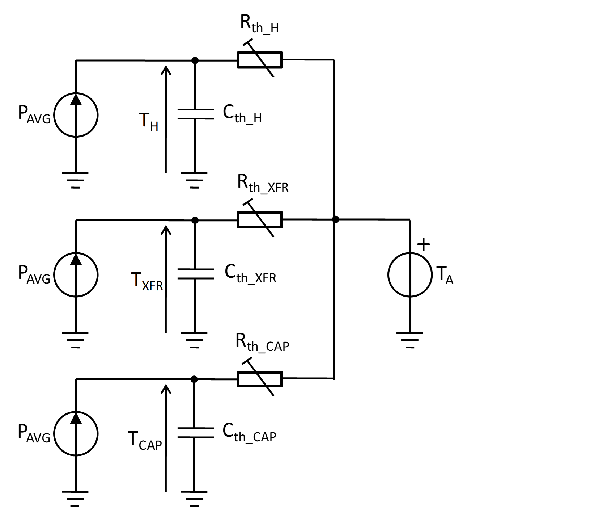
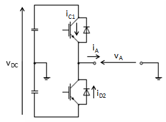
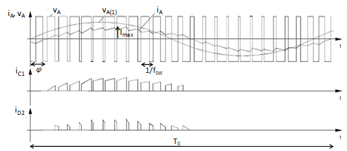
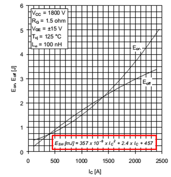
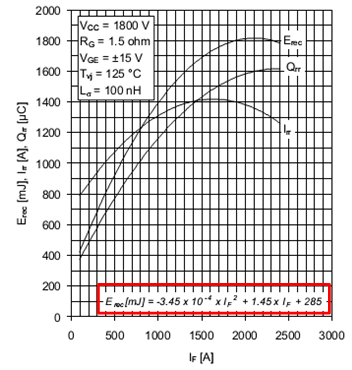
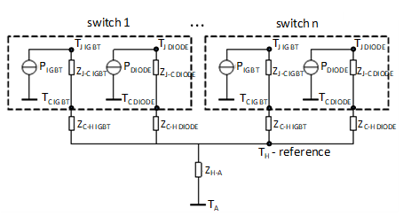
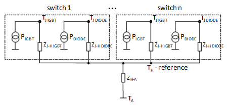
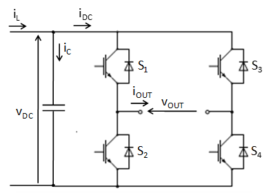

Thermal Modeling of Power Electronic Devices
Overview of the basic principles behind the averaged loss calculation in power electronic switching blocks (PESBs) and the development of the PESB thermal model.
Simplified thermal model of a Power Electronic Device
The first step in the process of power electronic device thermal modeling is to represent the thermal behavior of all components of interest as first order low-pass filter transfer functions with the output power at their inputs and the component temperatures at their outputs. Figure 1 illustrates the modeling concept, where components of interest for thermal modeling are the heat sink of the converter (designated by index H), the grid voltage transformer (index XFR), and the DC-link electrolytic capacitor (index CAP). designates the output power averaged over one output voltage period (for inverters represents averaged apparent power), is the thermal resistance between the heat sink and the ambient, is the thermal capacitance of the heat sink, is the thermal resistance between the transformer body and ambient, is the thermal capacitance of the transformer, is the thermal resistance between the capacitor body and ambient, is the thermal capacitance of the capacitor, is the ambient temperature (reference value), is the heat sink temperature, is the transformer temperature, and is the capacitor temperature.

If a cooling fan is applied then thermal resistances will depend on the fan speed. In case the DC motor is driving the fan, the speed is directly proportional to the applied DC motor voltage, . Assuming that thermal resistances will drop linearly as the fan speed increases, it can be expressed as:
| (1.1) |
The asymptotical value of the model's temperature can be expressed as:
| (1.2) |
where represents all of the considered thermal resistances in the model, are the maximal values of those resistances (corresponding to zero fan speed), and is the rate of change for the thermal resistances due to the change in . must be a negative number, and the overall value of must be positive.
Parameters of the model, thermal resistances, and thermal capacitances can be determined by measuring each component's change of temperature after a step change in the output power, or powering up of the device (Figure 2).
The thermal time constant of a component is defined as the product of thermal resistance and thermal capacitance:
| (1.3) |
and can be found by the time elapsed from the instant of a step change in the averaged power until the moment the component temperature response reaches 63% of the steady-state value.
First order low-pass filter in the discrete form
The and cells in the thermal model of each of the thermal elements form one low-pass filter whose input is and output is the elements' temperature. In the discrete form, the low pass filter can be represented as shown in Figure 3, where is the sampling period of the filter and is the time constant of the filter.
The transfer function of the filter is:
| (1.4) |
In the time domain, equation (1.4) has the following form:
| (1.5) |
Measurement of
Averaged output power, , (for inverters, represents the averaged apparent power) can be calculated based on the fundamental component of the current and the fundamental component of the output voltage.
For single-phase inverters, (apparent power) is equal to:
| (1.6) |
where is the maximal value of the fundamental component of output current and is the maximal value of the fundamental component of output voltage.
For three-phase inverters, the expression for (apparent power) is:
| (1.7) |
where is the maximal value of the fundamental component of phase current and is the maximal value of the fundamental component of phase voltage.
The values for and need to be found from the measurement samples of the output current and output voltage, respectively. Due to the inductive nature of the loading of voltage source inverters, and thus usually low current ripple, can be directly read from the obtained samples.
On the other hand, finding requires much more processing of the sampled values. Still, in grid connected inverters the fundamental of the inverter output voltage differs only slightly from the corresponding grid voltage. Therefore, an approximate value of can be found directly from measurements of the grid voltage or even entered as a parameter if stiff grid voltage is assumed.
| Inputs | Unit | Description |
|---|---|---|
| PAVG | W | Averaged output (apparent) power |
| VFAN | V | DC motor voltage driving fan |
| Outputs | Unit | Description |
| TH | ˚C | Heat sink temperature |
| TXFR | ˚C | Grid transformer temperature |
| TCAP | ˚C | DC-link temperature |
| Parameters | Unit | Description |
| TA | ˚C | Ambient temperature |
| Rth_H_0 | ˚C/W | Thermal resistance heat-sink-to-ambient for zero fan speeed (VFAN=0) |
| Rth_XFR_0 | ˚C/W | Thermal resistance transformer-to-ambient for zero fan speeed (VFAN=0) |
| Rth_CAP_0 | ˚C/W | Thermal resistance capacitor-to-ambient for zero fan speeed (VFAN=0) |
| Rth_H/∆VFAN | ˚C/W | Rate of thermal resistance heat-sink-to-ambient change due to change in VFAN |
| Rth_XFR/∆VFAN | ˚C/W | Rate of thermal resistance transformer-to-ambient change due to change in VFAN |
| Rth_CAP/∆VFAN | ˚C/W | Rate of thermal resistance capacitor-to-ambient change due to change in VFAN |
| τth_H | s∙W/˚C | Thermal time constant of the heat sink |
| τth_XFR | s∙W/˚C | Thermal time constant of the grid transformer |
| τth_CAP | s∙W/˚C | Thermal time constant of the DC-link capacitor |
Principles of loss calculations
The method of loss calculation given in this document comes from the application notes of the two biggest manufacturers of power electronic switching components - ABB [1] and Semikron [2]. It is based on averaged computation of the conduction and switching losses over one period, , of the output frequency. The approach is applicable for single-phase or three-phase voltage source inverters using naturally sampled pulse-width modulation (PWM) and with sinusoidal output currents. Therefore, it is also fully applicable for grid connected applications and motor drive applications. Required data for the power electronics (PE) components are derived from their datasheets.
IGBT/MOSFET loss calculation considerations
Instantaneous losses inside an IGBT, , consists of conduction losses, , and switching losses, . Conduction losses can be expressed as:
| (2.1) |
where is the collector-emitter threshold voltage, is the IGBT's on-state slope resistance and is the collector current. Since each IGBT (Figure 4) conducts over one half of the period (Figure 5), the averaged value of the conduction losses, , can be calculated as:
| (2.2) |
where is the maximal value of the output current, and τ(t) is the function of the pulse pattern ( when the IGBT is turned on, when the IGBT is turned off). It should be noted that, due to the periodic shape of the output current and , expression (2.2) is valid for all transistors in the inverter.


Assuming that the switching frequency, , is much higher than , can be approximated with:
| (2.3) |
where M is the maximal value of the modulation index (0<M<1 in the linear mode of PWM) and φ is the output current to output the voltage phase displacement angle. By inserting (2.3) into (2.2) and solving the integral, is obtained in the form [1], [2]:
| (2.4) |
In grid connected applications, M can be regarded as a constant and entered as an parameter into the loss calculation algorithm. The same stands for cosφ: in the control algorithm it is usually kept at the pre-set value (e.g. cosφ=1 for distribution networks) and can be entered as a parameter. Therefore, to find , needs to be measured.
IGBT switching losses during each switching cycle consists of turn-on and turn-off losses. There are usually expressed in the form of energies:
| (2.5) |
Datasheets give the dependency of loss switching energy, , on the IGBT current in the polynomial form (see figure below):
| (2.6) |

Expression (2.6) is valid when the DC-link is supplied with a nominal value of the IGBT voltage, . If in an application DC voltage differs from , a good rule of thumb is to proportionally change the catalogue value of [1]:
| (2.7) |
Averaged value of switching losses, , during one period is:
| (2.8) |
where n denotes number of switching cycles, , during one period. Assuming a sinusoidal output current in (2.8), i.e. (2.7), the expression for can be obtained in the form [1]:
| (2.9) |
Switching frequency, , is often fixed for a given PE converter and thus can be entered as a parameter in the loss calculation algorithm. As previously mentioned, polynomial coefficients, , , and , and nominal IGBT voltage are all datasheet values. Therefore, to find , and need to be measured. Total averaged IGBT losses, , is the sum of expressions (2.4) and (2.9):
| (2.10) |
Diode losses are calculated in almost the same manner. In the process of deriving the averaged diode conduction losses, , the pulse pattern, τ(t), needs to be negated with respect to (2.2) (Figure 5). is obtained in the form:
| (2.11) |
where is the diode's forward threshold voltage and is the diode's forward slope resistance. Energy loss when turning on the diode can be neglected. Energy during turn-off is expressed by the reverse recovery energy, , which is available in the polynomial form as a function of the forward current (see figure below):
| (2.12) |

Averaged recovery losses are obtained as a function of maximal value of the output current, , and DC-link voltage, , while the switching frequency, , is regarded as a parameter:
| (2.13) |
Total averaged diode losses, , are the sum of expressions (2.11) and (2.13):
| (2.14) |
Thermal analysis of a PESB
The thermal model of the PESB can be represented by an analogous electrical circuit to one in Figure 8, corresponding to a PESB with a base plate, or the one in Figure 9, corresponding to a PESB without a base plate [1]. Often the thermal model is utilized to calculate IGBT and diode junction temperatures, and , in various operating conditions or to find the maximal possible PESB loading that does not push junction temperatures beyond maximal permissible values. In the model, current source values correspond to the power losses in the IGBT, , and the diode, , as determined in the previous section. As noted there, averaged losses of all IGBTs in the inverter are equal, just as are all averaged loss for the diodes:
| , | (3.1) |


Parameters of the model include the thermal impedances junction to case, and , case to heat sink, and , heat sink to ambient, (the common heat sink for the whole PESB is assumed), and ambient temperature, . Each of thermal impedances comprises of two parameters: thermal resistance and a thermal time constant:
| , , , , | (3.2) |
A model of a PESB without a baseplate does not include separate and impedances (the same is valid for diodes) since the junction is directly placed onto the heat sink. Instead, there would be two given thermal impedance junctions to the heat sink, and .
Thermal impedances represent a first order low pass filter to propagation of power losses. Therefore, they can be represented by the corresponding transfer function; e.g. for :
| (3.3) |
Since the time constant of the heat sink, , is much higher than the other time constants in the model, heat sink temperature, , can be regarded as a reference value. Based on the models from Figure 8 or Figure 9, it can be calculated as:
| (3.4) |
where n is the number of IGBT/diode pairs in the PESB. Finally, in the model with the baseplate, the IGBT's junction temperature equals:
| (3.5) |
and the diode's junction temperature is:
| (3.6) |
In the model without the baseplate, the same equations (3.5) and (3.6) can be used, with second particles cancelled by assigning zero values to and .
Loss calculation in a DC-link capacitor and thermal model
Losses in the DC-link capacitor, , are equal to the squared RMS value of the capacitor current, , multiplied by the capacitor's equivalent series resistance, :
| (4.1) |
Losses in the DC-link capacitor depend upon the applied PE converter modulation technique. Therefore, the loss calculation procedure is tied to the loss calculation of the converter.
Single-phase inverter DC-link capacitor losses
A single phase inverter is usually controlled using one of two PWM techniques - bipolar or unipolar PWM. The selection influences the current that the converter draws from the DC-link, .

References
[1] ABB: "Applying IGBTs", Application Note, doc.no. 5SYA2053-04 Mai 12.
[2] Semikron: "Application Manual - Power Modules", First edition, Semikron International, 2000, ISBN 3-932633-46-6